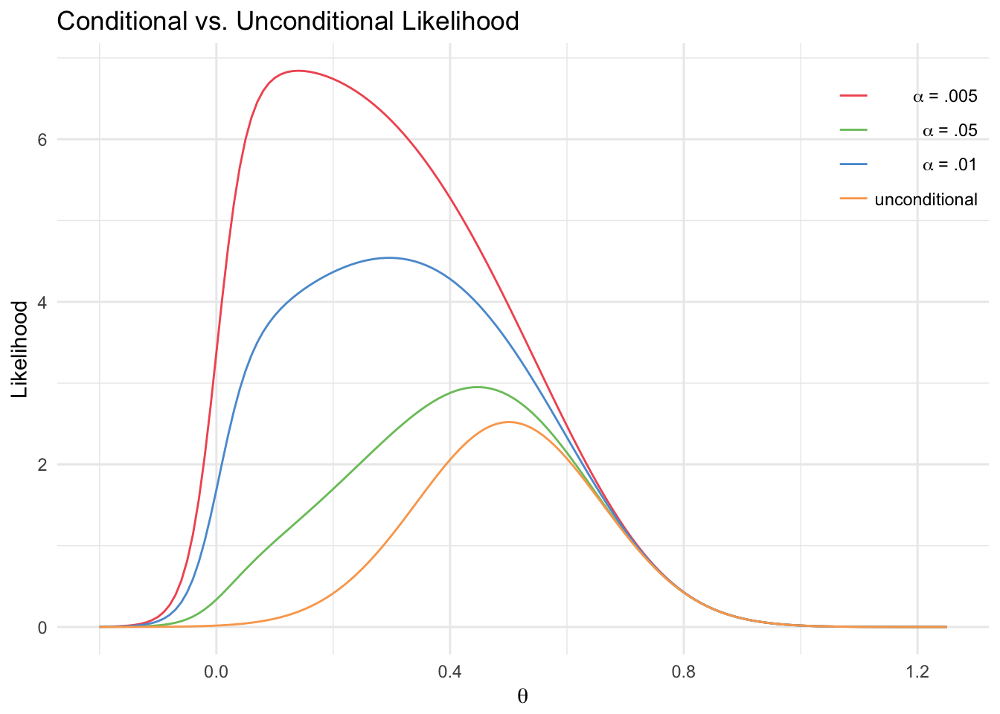
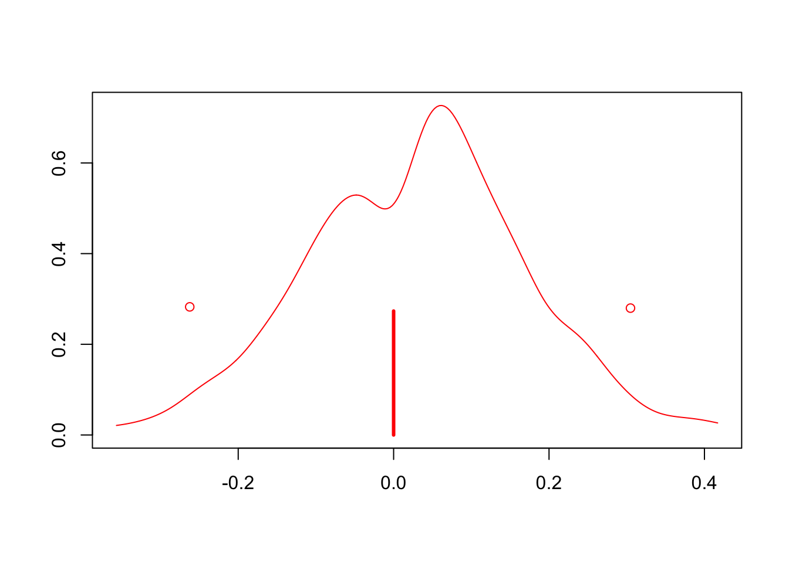

Chapter 5 Models
We propose three different Bayesian approaches:
A fully Bayesian mixed effects hierarchical model that can jointly perform significance testing and effect estimation. By combining the testing and estimate steps, we can overcome the winner’s curse and account for the uncertainty that arises when selecting an SNP.
A conditional likelihood model that can take into account the probability of finding a significant result in the discovery sites when estimating effect size.
A bayes factor based model that uses the bayes factor from the discovery sites (which is more reliable than the p-value, as discussed previously) to quantify the uncertainty of the significant result.
While the first approach is truly Bayesian and requires all the data, the second and third can be used as long as the sufficient statistics (MLE, SE, p-value, \(\alpha\)) are available.
5.1 Fully Bayesian Model
In this model, the probability of association \(\xi\) can give rise to a latent variable \(\iota\) drawn from a bernoulli, which is then used to parametrize the distribution of \(\mu\) and \(\beta_{j}\). If \(\iota= 0\), \(\mu=0\) and \(\beta_{j} = 0\) for all sites \(j\). Otherwise, \(\beta_{j}\) are normally distributed around (nonzero) \(\mu\).

Site effects \(\beta_j\) were normally distributed with mean \(\mu\) and variance \(\sigma^2\) if \(\mu\) was nonzero, otherwise they defaulted to 0. The prior for \(\mu\) was a mixture of a point mass at zero and a Cauchy(0,1). The prior for \(\sigma\) was a truncated Cauchy(0,1), with support only on the positive real line. This choice of priors is based on simulation results. The prior for \(\xi\), the probability of the alternative, was a Beta(.5,.5), which has a U-shape so that it favors 0 or 1 more heavily than the values between them.
The complete model is as follows: \(\beta_{j}|\iota = 1 \sim N(\mu, \sigma^{2p53})\)\ \(\mu|\iota=1\sim Cauchy(0,0.1)\)\ \(\mu, \beta_{j}|\iota = 0 =0\)\ \(\sigma\sim Cauchy(0,1), \sigma\geq 0\)\ \(\iota \sim Bernoulli(\xi)\)\ \(\xi \sim Beta(1/2, 1/2)\)\
There is no difference between discovery and validation sites in the Bayesian framework. Even considering them separately, one could consider the posterior distributions of the parameters given only discovery site data as the priors given the validation data, which would result in exactly the same results.
The fully Bayesian model was fit jointly as well as marginally. Since the results were very similar, the marginal models were used for computational efficiency and clarity of interpretation. will put joint in supplement
5.2 Conditional Likelihood
In this case, the results from the discovery sites are used as a prior for the validation data analysis, which is why only the sufficient statistics are needed.
Given the discovery sites’ MLE and SE, we can use the CLT and definition of MLE to state that \(MLE_i \sim N(\beta_i, SE_i)\). Conditioning on the fact that this estimate is significant, \(P(MLE_i) = \frac{\phi(MLE_i, \beta_i, SE_i)}{\Phi(-q_i, \beta_i, SE_i)+1-\Phi(q_i, \beta_i, SE_i)}\), where \(\phi(x, \beta_i, \sigma)\) is the pdf of a normal distribution with mean \(\beta_i\) and variance \(\sigma^2\), and \(\Phi(x, \beta_i, \sigma)\) is the cdf of the same distribution. The value of \(q_i\) is \(\Phi^{-1}(1-\frac{\alpha}{2}, 0 ,SE_i)\), where \(\alpha\) is the power of the test (i.e. p-values that are smaller than \(\alpha\) are considered significant). This is cutoff for an MLE value to be considered significant. Let this distribution be denoted as \(CL(\beta_i,SE_i, q_i)\).

We used the random effect conditional likelihood model as a “prior” for \(\beta_{ j}, j\in discovery\), and then use this as the prior \(P(\beta | discovery)\) for the model with the validation data.
The updated model is:
\(\beta_{j} \sim N(\mu, \sigma^{2p53}) , j \in validation\)\ \(MLE_{j} \sim CL(\beta_{j},SE_{j}, q_j) , j \in discovery\)\ \(\sigma\sim Cauchy(0,1), \sigma\geq 0\)\
Note that the selection uncertainty is somewhat accounted for through the conditional likelihood, but there is no measure of this uncertainty. By using the discovery MLEs, we are already assuming that there is a nonzero effect.
5.3 Bayes Factor Model
The discovery data can be used not only in estimating the distribution of the size of a preestablished effect (\(\mu\)), but in estimating the distribution of the probability of the effect itself (\(\xi = P(H_1)\)). To make this model easily generalizable, we use the upper bound on the Bayes Factor \(BF = \frac{L(\bar Y | H_1)}{L(\bar Y | H_0)} \leq \frac{1}{-e p log(p)}\), where \(p\) is the p-value from the discovery data (Sellke et al., 2001). This is a “best-case scenario” of how much evidence there is from data given a particular p-value. Since this value is fixed given the discovery data, we can then consider the posterior probability of true association \(\xi\) given the discovery as a transformation of \(\xi\), which is parametrized with prior Beta(.5,.5). Let \(o\) be the prior odds \(\frac{1-\xi}{\xi}\). The posterior \(\xi' = \frac{P(H_1)*L(Y|H_1)}{P(H_0)*L(Y|H_0)+P(H_1)*L(Y|H_1)} = \frac{o*BF}{1+o*BF}\). Then \(\xi'\) can be used in the overall model with the validation data.

In this case, the discovery data is not used at all to estimate the effect sizes, but it will have an effect on the amount of zero-valued global effects sampled because it skews the distribution to the right. Note that for small p-values, this can be very extreme. For a GWAS p-value \(p = 10^{-7}\) and \(\xi \sim Beta(.5,.5)\) , \(P( \xi' \leq 0.5) =\) \(4.7364436\times 10^{-11}\) . Due to this, we use a flatter prior: \(\xi \sim Beta(.9,.9)\) . Then \(P( \xi' \leq 0.5) =\) \(1.2409339\times 10^{-6}\).
5.4 Methods
All models were fit using R2jags. To specify distributions that are not part of the R2jags library, such as the conditional likelihood, we use the “ones trick”, which is implement by creating artificial observations of a Bernoulli variable. Consider a prior for \(\theta\) that is proportional to \(\pi(\theta)\). If we set that bernoulli variable “ones” is equal to 1 with probability \(\pi(\theta)\), create an observation “ones”\(= 1\), and set a uniform prior for \(\theta\), then we are effectively creating a “posterior” for theta that is proportional to \(\pi(\theta)\) as intended.
Each model was run with the default settings: 3 chains, 2000 iterations, and 1000 burn-in samples.
All computed credible intervals are HPD (highest posterior density) intervals. A 95% HPD interval is the 95% of the sampled values with the highest density. Unlike quantile-based intervals, these can account for multimodal distributions and give more reasonable answers.
Point estimates were calculated used the posterior median, so that the estimates would be invariant to transformations (e.g. log).